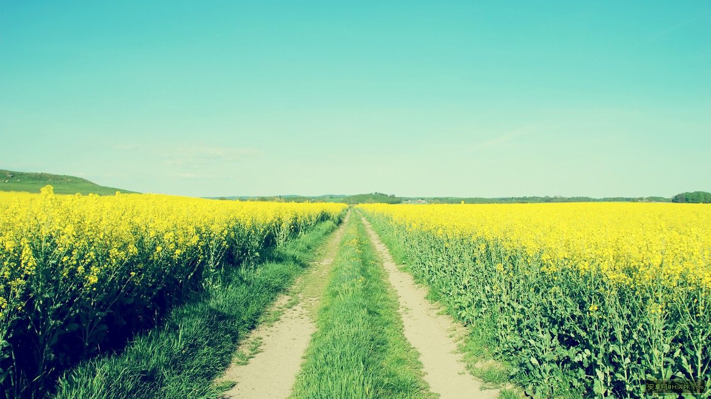

 世界之大无奇不有，虽然没有两块相同的树叶，但是在人类的世界中会有版权问题，其他生物的世界就没有这么多的规矩。 有鉴于此，所以本网站不对外公开，很容易就发现大自然的鬼斧神工，当出现自然奇观的时候只有有思想的人类才会去欣赏。侠之大者，为国为民。 好像脱离的本站的主题？？？不存在的站长就是这样的一个人只要看到自己喜欢的就会收集起来，这样才是生活，充实自己。 说到站长喜欢的东西那就多了去了，首先从生活上开始，运动喜欢跑步，其实喜欢篮球，但是工作以来没人打，只有跑步才是唯一， 游泳，夏天到了，到海边游泳是本站长最喜欢的事了，而且还有大波妹看，简直美滋滋。剩下的就是骑自行车，爬山，散步等，都很喜欢。 好了运动说完了。 说一下喜欢的动漫、游戏和电影吧，动漫，哈哈哈，首屈一指就是龙珠超，海贼王，火影（已完结），柯南，这些是日漫。 还有一些剧场版的动漫《精灵鼠小弟》，《丛林有情狼》，《疯狂穴居人》，《狮子王》，《功夫熊猫》。 国产的有秦时明月，天行九歌，镇魂街，妖神记，荣耀。游戏的话只玩暴雪的炉石，魔兽的话还行。对了还有很多的有意思的视频， 比如，网剧《余罪》《成人记》，以前的古装剧《怪侠一枝梅》最喜欢的抗日剧《杀虎口》《雪豹》，美剧《斯巴达克斯》，《鲁滨逊漂流记》（英国） 日本动漫真人翻拍电影《浪客剑心》三部曲。 喜欢吃的东西，大多是水果，还有鱼肉炒的那种不然炖的也行，不挑食。喜欢上山冒险，《探险社团》，想出去探险但是没有时间， 其实贝爷的视频上线之后就感觉好想自己出去野外生活一个月啊，真的爽，这辈子怕是没有机会了，想知道自己的生命力到底能有多脆弱。渺小的凡人（二王的攻击音效）， 其实还喜欢科学的力量，喜欢各种小制作，有朝一日希望把自己房间布置成有机关的优雅卧室。算了这只是我天真的想法罢了，其实很费力的，其实也不是不可能，只是要有好的点子， 自己设计确实要艺术细胞，不过空间太小了，也是有个很大的限制。越是受到限制就越难设计，这就是设计师应该考虑的地方。 好了扯淡到此为止，本站只收集了站长爱好的东西，提供出来一起分享，隐藏在黑暗之下的秘密，要找到我才能开启封印，任何想窥探我内心的人，都会后悔的。（吓唬吓唬你，其实只有自己看得到，哈哈哈）
生命在于运动，为了自己身体更加强壮，更加健康，体质更加好，在锻炼身体方面一点也不敢懈怠。其实在大学阶段以前自己不太注重身体的锻炼，只是尽量做一些学校的必要的运动。 到了大学，自己知道身体是很重要的所以为了坚持不让自己生病，每天固定去锻炼一波，大多数情况下是跑步，还有就是打篮球，散步的次数也比较多。最终原因是自己在大学里面成绩不好，所以有一个好的身体也不枉读了大学（苦笑，苦笑）。 学生阶段就这么的结束了，但是真正的生活才刚刚开始，进入社会我才明白，自己都没什么时间了，一是没时间，二是没有人，大家都分散在五湖四海，很难聚在一块。所以只能是随遇而安了，在说说我现在的处境，在一年前，不还要再短一点， 在三个月前吧，感觉突然变了，莫名其妙的发生了变化，我知道事情不会无缘无故的改变，一定有原因，但是想不出确定的原因，只是大概的估计了一下。我估计啊，就是自己长大了，年龄和结婚的压力和家庭的压力渐渐的放在了自己的身上， 感觉到了这就是男人该承担的责任，累？不会的，永远不会累，这个世界需要我去改变，这个时代的节奏实在是太快了，这就是我工作之后才明白的，在校园的时光已经过去，只能是在回忆里了，有些事还是没能做的完美啊，即使世界上并不存在完美的东西。 这就是我现在工作之后第一次感觉自己真的得努力了，强烈的感觉。这也许是每个男人的必经之路吧。真的很感动。呜~呜~呜~，哈哈哈。话说回来，关于锻炼身体的事到现在我都没有没有懈怠过，不管发生任何事我都不会懈怠对自己的严格要求， 修炼出强健的身体。在追求极限的道路上，我的努力确实还不够，所以更加得严格要求自己，强大的力量源自何方，怎么做才是恰当的好呢？这种事没个定论，自己也决定不了。恰到好处的处理方式，其实是存在的，但是成功的案例很少，就是不注重生活细节。 犯下的错误，现在要改工程量也是有点大，只能以后再慢慢的留心，少走点弯路。————这个运动爱好写到这里。
说到我的影视爱好，就是动漫了，一般比较喜欢热血的动漫和电影。励志的电影，悬疑电影，喜剧。都能良好的驾驭。首先讲的是龙珠超，为了寻求奋斗的动力而观看的热血动漫。果然爆燃，冲击力十足啊，关键是最后的两集， 实在是让自己回到了精力充沛的时代，巅峰时期是什么时候？还没有到来。真正的巅峰时期还没有到来，我还在成长之中（量变）。等自己达到质变得那一天。励志电影也是正能量的传输媒介，代表性的我暂时想不起来。悬疑的片子就属一些推理剧了，比如， 《余罪》，这部网剧实在是太有魅力了，无论是人物塑造还是演技，简直无可挑剔。让我也想当当痞子警察，这个世界上并不存在什么所谓的正义，只要做的事是为名有利于社会，就是正义，海贼王这部动漫也强调了这一点。一个海贼心中的正义，一个痞子心中的正义。 都比那些说着正义的废物强太多了，这就是真实，这个社会普遍的现象就是人们都只接受得了表面的正义，至少这个社会上的大部分人都是这么认为的，事实就是如此。不必在意世上的人怎么看你，因为我做的事无人知晓。平庸就是最好的心态。 在做任何事的时候都要全身心的投入其中。平时改怎么做？想法确实很完美，平时就是该吃吃该喝喝，这些事对自己都没有好处啊，像柯南都是在做有意义的事情，不过生活嘛，自己想怎么做有自己的自由。像这样逼自己倒是不太好，但是这个度得把握好，关键在于自己想怎样提升自己。 其实不必每件事都做得尽善尽美，这种人还没出现过，就算是挑战自己也得量力而为，知道自己的实力爆发力，调整自己的目标。我想这样的做法还是比较稳健的。其实还是要多了解自己，做到这一点确实很难，这也是迷茫的根本原因，知道自己的水平才能确实的提升自己。 其实看这些励志的悬疑的热血的都是向往这样的人，同伴，团队比什么都重要，并不是一个人就能成事的。喜剧完全是陶冶自己的情操给生活添加乐趣，这其实是发明电影的初衷。大脑·思考·突破局限性
俗话说：“美食和美女是最不能辜负的两样东西”。美食，到了哪个地方就一定会去寻找当地的美食，而且站长个人还很喜欢央视拍的纪录片《舌尖上的中国》的，制作得非常好。里面的各类美食遍布中国的大江南北，有正式的非正式的各种小吃美食。 鸡鸭鱼肉蔬菜瓜果，各类小吃，各种腌制品，发酵品，都能做成美食。如果能吃到这么好的东西简直死而无憾了。还有就是美景，中华大地上其实美景无数，现在的自然也保护起来了，环境变好了，大江南北各样的美景让人心旷神怡。个人最喜欢的是山水，有山有水的地方，其实主要是要有水。 水可以给一个地方活力，所以那里必定有树，江南水乡真的很美，美景可以让心情平静，林中独步。灵感的来源，你不够优秀是因为你不够孤独。行走在竹林中，非常的安静，和谐的气氛，清新的空气。棒极了。